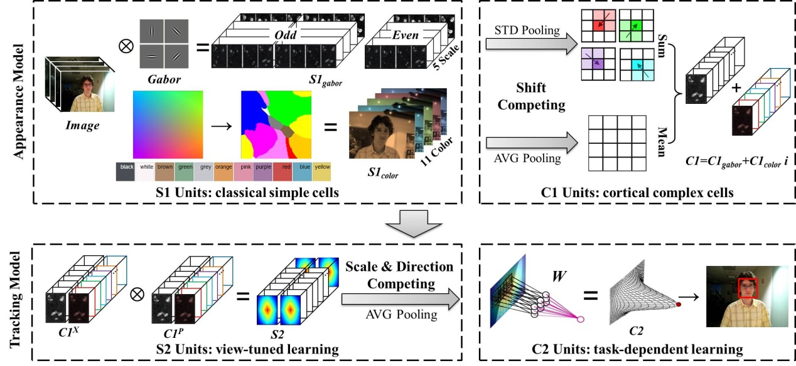
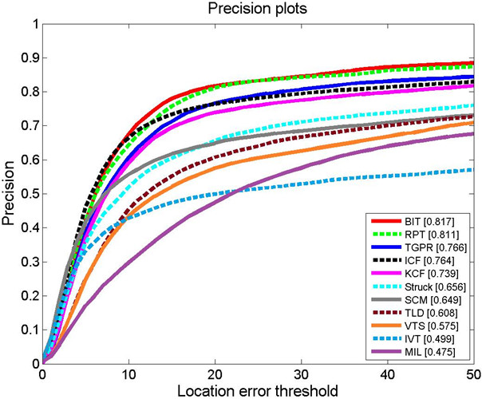
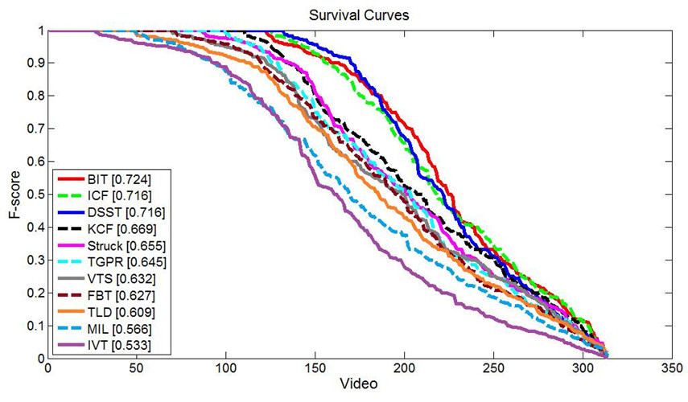
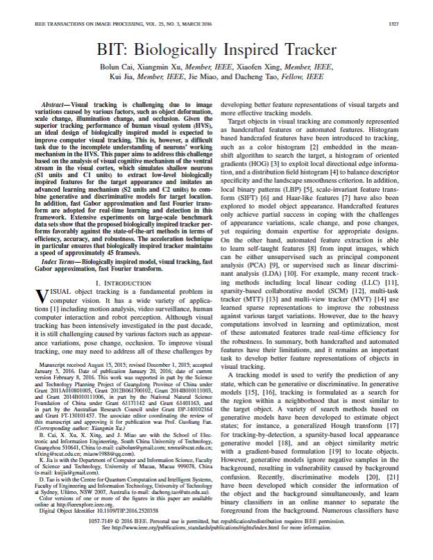

Bolun Cai, Xiangmin Xu, Xiaofen Xing, Kui Jia, Jie Miao, Dacheng Tao
IEEE Transactions on Image Processing (TIP), 2016
[Poster (1.40MB)]
[Results of TB50 (1.24MB)]
[Results of ALOV (61.5MB)]
Bolun Cai Xiangmin Xu Xiaofen Xing Kui Jia Jie Miao Dacheng Tao
South China University of Technology
|  |
Biologically inspired tracker. BIT cascades four units including appearance model (S1 and C1 units) and tracking model (S2 and C2 units): S1 units extract texture and color information by Gabor filters and color names; C1 units pool texture and color features and combine them by complex response maps; S2 units learn view-turned feature by a linear convolution between the input X and the stored prototype P; C2 units apply a full-connection neural network for task-dependent learning. |
Abstract
Visual tracking is challenging due to image variations caused by various factors, such as object deformation, scale change, illumination change, and occlusion. Given the superior tracking performance of human visual system (HVS), an ideal design of biologically inspired model is expected to improve computer visual tracking. This is, however, a difficult task due to the incomplete understanding of neurons’ working mechanism in the HVS. This paper aims to address this challenge based on the analysis of visual cognitive mechanism of the ventral stream in the visual cortex, which simulates shallow neurons (S1 units and C1 units) to extract low-level biologically inspired features for the target appearance and imitates an advanced learning mechanism (S2 units and C2 units) to combine generative and discriminative models for target location. In addition, fast Gabor approximation and fast Fourier transform are adopted for real-time learning and detection in this framework. Extensive experiments on large-scale benchmark data sets show that the proposed biologically inspired tracker performs favorably against the state-of-the-art methods in terms of efficiency, accuracy, and robustness. The acceleration technique in particular ensures that biologically inspired tracker maintains a speed of approximately 45 frames/s.
Results of TB2013
 
Video Demo
Downloads
|  |
"BIT: Biologically Inspired Tracker" Bolun Cai, Xiangmin Xu, Xiaofen Xing, Kui Jia, Jie Miao, Dacheng Tao IEEE Transactions on Image Processing (TIP), 2016 [Poster (1.40MB)] [Results of TB50 (1.24MB)] [Results of ALOV (61.5MB)] |
Last update: April 09, 2016